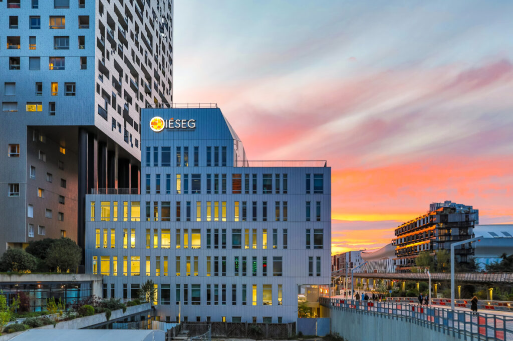

Étudiante à l'IESEG School of Management à Paris, passionnée par la littérature et le sport, notamment la course à pied. Mon livre préféré ? 1984 de George Orwell !
La littérature est une de mes grandes passions. 1984 de George Orwell est un roman dystopique qui dépeint un futur totalitaire où la surveillance et la manipulation de la pensée sont omniprésentes. J'apprécie sa profondeur et sa pertinence, surtout dans le contexte actuel.
Découvrez le Programme Grande École de l'IÉSEG :
À l'IÉSEG, j'apprends à naviguer dans le monde complexe des affaires, en développant des compétences en leadership et en gestion. Les projets de groupe et les stages sont essentiels à ma formation, me préparant à relever les défis du monde professionnel.
Le sport occupe une place importante dans ma vie, en particulier le running. J'ai déjà participé trois fois au 10K Paris organisé par Adidas, et j'adore relever de nouveaux défis ! La course à pied est pour moi une façon de me ressourcer et de me dépasser.